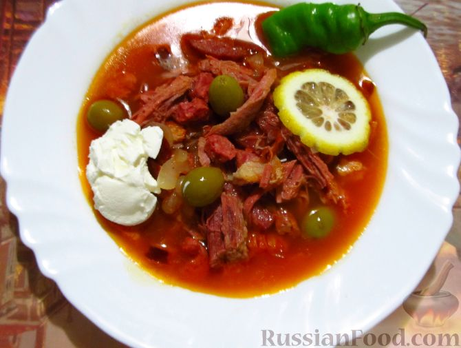

Солянка сборная, как я люблю

Из чего готовим?
- Суповой набор, любой - 1-2 кг
- Мясо копченое, ребра, например - 500 г
- Курица копченая, окорочка - 4 шт
- Мясо сырое, любое - 500 г
- Любимый кетчуп - 200 г
- Лук-порей - 500 г
- Лук репчатый - 2 шт.
- Лимон - 1 шт.
- Оливки и маслины - 2 банки
- Соль, перец, лавровый лист - по вкусу
- Сметана, зелень - для подачи
Способ приготовления
Путь приготовления солянки труден, но таков путь. (с) Неизвестный самурай
- Варим костный бульон. Для этого суповой набор варим с целыми луковыми головками, солью, перцем и лавровым листом не менее 3-х часов
- Через час после закипания костного бульона, закидываем сыро мясо. Итого вырим мясо не менее 2-х часов
- Пока варим мясо, подготавливаем к варке ребра и окорочка - убираем кости, нарезаем на кубики. Кости от ребер тоже кидаем в бульон.
- Спустя 3 часа варки (или больше, по желанию), достаем лук, мясо и суповой набор, закидываем варить ребра и окорочка.
- От супового набора отделяем мясо, выкидываем кости. Сваренное мясо режем кубиками и кидаем в бульон
- Режем лук порей, оливки и маслины, кидаем в бульон
- Выключаем огонь, доливаем кетчуп, добавляем тертую цедру лимона, перемешиваем, оставляем настаиваться полчаса
- Спустя полчаса перемешиваем, пробуем, добавляем соль, перец по вкусу.
- Приятного аппетита!
Другие рецепты солянки

Лучше всего солянку подавать теплой со сметаной и кинзой.